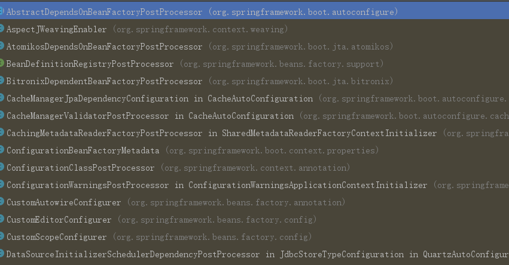

BeanFactoryPostProcessor接口是Spring中一个非常重要的接口，它的接口定义如下
public interface BeanFactoryPostProcessor {
void postProcessBeanFactory(ConfigurableListableBeanFactory beanFactory) throws BeansException;
}当你实现了这个接口的时候，可以对还没有初始化的bean的属性进行修改或添加
BeanFactoryPostProcessor注册与BeanPostProcessor的统一注册不同，BeanFactoryPostProcessor的注册是留给具体的业务实现的。它的维护是在AbstractApplicationContext类中
private final List<BeanFactoryPostProcessor> beanFactoryPostProcessors =
new ArrayList<>();
public void addBeanFactoryPostProcessor(BeanFactoryPostProcessor postProcessor) {
Assert.notNull(postProcessor, "BeanFactoryPostProcessor must not be null");
this.beanFactoryPostProcessors.add(postProcessor);
}调用逻辑在AbstractApplicationContext.invokeBeanFactoryPostProcessors方法中
这个方法比较长，可以重点关注我添加注释的地方
protected void invokeBeanFactoryPostProcessors(ConfigurableListableBeanFactory beanFactory) {
PostProcessorRegistrationDelegate.invokeBeanFactoryPostProcessors(beanFactory, getBeanFactoryPostProcessors());
if (beanFactory.getTempClassLoader() == null && beanFactory.containsBean(LOAD_TIME_WEAVER_BEAN_NAME)) {
beanFactory.addBeanPostProcessor(new LoadTimeWeaverAwareProcessor(beanFactory));
beanFactory.setTempClassLoader(new ContextTypeMatchClassLoader(beanFactory.getBeanClassLoader()));
}
}
public static void invokeBeanFactoryPostProcessors(
ConfigurableListableBeanFactory beanFactory, List<BeanFactoryPostProcessor> beanFactoryPostProcessors) {
Set<String> processedBeans = new HashSet<String>();
// 1.判断beanFactory是否为BeanDefinitionRegistry，在这里普通的beanFactory是DefaultListableBeanFactory,而DefaultListableBeanFactory实现了BeanDefinitionRegistry接口，因此这边为true
if (beanFactory instanceof BeanDefinitionRegistry) {
BeanDefinitionRegistry registry = (BeanDefinitionRegistry) beanFactory;
List<BeanFactoryPostProcessor> regularPostProcessors = new LinkedList<BeanFactoryPostProcessor>();
List<BeanDefinitionRegistryPostProcessor> registryProcessors = new LinkedList<BeanDefinitionRegistryPostProcessor>();
// 2.处理入参beanFactoryPostProcessors
for (BeanFactoryPostProcessor postProcessor : beanFactoryPostProcessors) {
if (postProcessor instanceof BeanDefinitionRegistryPostProcessor) {
BeanDefinitionRegistryPostProcessor registryProcessor =
(BeanDefinitionRegistryPostProcessor) postProcessor;
// 如果是BeanDefinitionRegistryPostProcessor则直接执行BeanDefinitionRegistryPostProcessor接口的postProcessBeanDefinitionRegistry方法
registryProcessor.postProcessBeanDefinitionRegistry(registry);
registryProcessors.add(registryProcessor);
} else {
regularPostProcessors.add(postProcessor);
}
}
List<BeanDefinitionRegistryPostProcessor> currentRegistryProcessors = new ArrayList<BeanDefinitionRegistryPostProcessor>();
// 3找出所有实现BeanDefinitionRegistryPostProcessor接口的Bean的beanName
String[] postProcessorNames =
beanFactory.getBeanNamesForType(BeanDefinitionRegistryPostProcessor.class, true, false);
for (String ppName : postProcessorNames) {
// 校验是否实现了PriorityOrdered接口
if (beanFactory.isTypeMatch(ppName, PriorityOrdered.class)) {
// 获取对应的bean实例, 添加到currentRegistryProcessors中,
currentRegistryProcessors.add(beanFactory.getBean(ppName, BeanDefinitionRegistryPostProcessor.class));
processedBeans.add(ppName);
}
}
// 排序(根据是否实现PriorityOrdered、Ordered接口和order值来排序)
sortPostProcessors(currentRegistryProcessors, beanFactory);
registryProcessors.addAll(currentRegistryProcessors);
// 遍历currentRegistryProcessors, 执行postProcessBeanDefinitionRegistry方法
invokeBeanDefinitionRegistryPostProcessors(currentRegistryProcessors, registry);
// 清空currentRegistryProcessors
currentRegistryProcessors.clear();
// 4.与上边3的流程差不多，这是这里处理的是实现Ordered接口
postProcessorNames = beanFactory.getBeanNamesForType(BeanDefinitionRegistryPostProcessor.class, true, false);
for (String ppName : postProcessorNames) {
if (!processedBeans.contains(ppName) && beanFactory.isTypeMatch(ppName, Ordered.class)) {
currentRegistryProcessors.add(beanFactory.getBean(ppName, BeanDefinitionRegistryPostProcessor.class));
processedBeans.add(ppName);
}
}
sortPostProcessors(currentRegistryProcessors, beanFactory);
registryProcessors.addAll(currentRegistryProcessors);
invokeBeanDefinitionRegistryPostProcessors(currentRegistryProcessors, registry);
currentRegistryProcessors.clear();
// 5.调用所有剩下的BeanDefinitionRegistryPostProcessors
boolean reiterate = true;
while (reiterate) {
reiterate = false;
// 找出所有实现BeanDefinitionRegistryPostProcessor接口的类
postProcessorNames = beanFactory.getBeanNamesForType(BeanDefinitionRegistryPostProcessor.class, true, false);
for (String ppName : postProcessorNames) {
// 跳过已经执行过的
if (!processedBeans.contains(ppName)) {
currentRegistryProcessors.add(beanFactory.getBean(ppName, BeanDefinitionRegistryPostProcessor.class));
processedBeans.add(ppName);
reiterate = true;
}
}
sortPostProcessors(currentRegistryProcessors, beanFactory);
registryProcessors.addAll(currentRegistryProcessors);
// 5遍历currentRegistryProcessors, 执行postProcessBeanDefinitionRegistry方法
invokeBeanDefinitionRegistryPostProcessors(currentRegistryProcessors, registry);
currentRegistryProcessors.clear();
}
// 6.调用所有BeanDefinitionRegistryPostProcessor的postProcessBeanFactory方法
invokeBeanFactoryPostProcessors(registryProcessors, beanFactory);
// 7.最后, 调用入参beanFactoryPostProcessors中的普通BeanFactoryPostProcessor的postProcessBeanFactory方法
invokeBeanFactoryPostProcessors(regularPostProcessors, beanFactory);
} else {
invokeBeanFactoryPostProcessors(beanFactoryPostProcessors, beanFactory);
}
// 到这里 , 入参beanFactoryPostProcessors和容器中的所有BeanDefinitionRegistryPostProcessor已经全部处理完毕,
// 下面开始处理容器中的所有BeanFactoryPostProcessor
// Do not initialize FactoryBeans here: We need to leave all regular beans
// uninitialized to let the bean factory post-processors apply to them!
// 8.找出所有实现BeanFactoryPostProcessor接口的类
String[] postProcessorNames =
beanFactory.getBeanNamesForType(BeanFactoryPostProcessor.class, true, false);
// Separate between BeanFactoryPostProcessors that implement PriorityOrdered,
// Ordered, and the rest.
// 用于存放实现了PriorityOrdered接口的BeanFactoryPostProcessor
List<BeanFactoryPostProcessor> priorityOrderedPostProcessors = new ArrayList<BeanFactoryPostProcessor>();
// 用于存放实现了Ordered接口的BeanFactoryPostProcessor的beanName
List<String> orderedPostProcessorNames = new ArrayList<String>();
// 用于存放普通BeanFactoryPostProcessor的beanName
List<String> nonOrderedPostProcessorNames = new ArrayList<String>();
// 8.1 遍历postProcessorNames, 将BeanFactoryPostProcessor按实现PriorityOrdered、实现Ordered接口、普通三种区分开
for (String ppName : postProcessorNames) {
// 8.2 跳过已经执行过的
if (processedBeans.contains(ppName)) {
// skip - already processed in first phase above
} else if (beanFactory.isTypeMatch(ppName, PriorityOrdered.class)) {
// 8.3 添加实现了PriorityOrdered接口的BeanFactoryPostProcessor
priorityOrderedPostProcessors.add(beanFactory.getBean(ppName, BeanFactoryPostProcessor.class));
} else if (beanFactory.isTypeMatch(ppName, Ordered.class)) {
// 8.4 添加实现了Ordered接口的BeanFactoryPostProcessor的beanName
orderedPostProcessorNames.add(ppName);
} else {
// 8.5 添加剩下的普通BeanFactoryPostProcessor的beanName
nonOrderedPostProcessorNames.add(ppName);
}
}
// First, invoke the BeanFactoryPostProcessors that implement PriorityOrdered.
// 9.调用所有实现PriorityOrdered接口的BeanFactoryPostProcessor
// 9.1 对priorityOrderedPostProcessors排序
sortPostProcessors(priorityOrderedPostProcessors, beanFactory);
// 9.2 遍历priorityOrderedPostProcessors, 执行postProcessBeanFactory方法
invokeBeanFactoryPostProcessors(priorityOrderedPostProcessors, beanFactory);
// Next, invoke the BeanFactoryPostProcessors that implement Ordered.
// 10.调用所有实现Ordered接口的BeanFactoryPostProcessor
List<BeanFactoryPostProcessor> orderedPostProcessors = new ArrayList<BeanFactoryPostProcessor>();
for (String postProcessorName : orderedPostProcessorNames) {
// 10.1 获取postProcessorName对应的bean实例, 添加到orderedPostProcessors, 准备执行
orderedPostProcessors.add(beanFactory.getBean(postProcessorName, BeanFactoryPostProcessor.class));
}
// 10.2 对orderedPostProcessors排序
sortPostProcessors(orderedPostProcessors, beanFactory);
// 10.3 遍历orderedPostProcessors, 执行postProcessBeanFactory方法
invokeBeanFactoryPostProcessors(orderedPostProcessors, beanFactory);
// Finally, invoke all other BeanFactoryPostProcessors.
// 11.调用所有剩下的BeanFactoryPostProcessor
List<BeanFactoryPostProcessor> nonOrderedPostProcessors = new ArrayList<BeanFactoryPostProcessor>();
for (String postProcessorName : nonOrderedPostProcessorNames) {
// 11.1 获取postProcessorName对应的bean实例, 添加到nonOrderedPostProcessors, 准备执行
nonOrderedPostProcessors.add(beanFactory.getBean(postProcessorName, BeanFactoryPostProcessor.class));
}
// 11.2 遍历nonOrderedPostProcessors, 执行postProcessBeanFactory方法
invokeBeanFactoryPostProcessors(nonOrderedPostProcessors, beanFactory);
// Clear cached merged bean definitions since the post-processors might have
// modified the original metadata, e.g. replacing placeholders in values...
// 12.清除元数据缓存（mergedBeanDefinitions、allBeanNamesByType、singletonBeanNamesByType），
// 因为后处理器可能已经修改了原始元数据，例如， 替换值中的占位符...
beanFactory.clearMetadataCache();
}细心的同学可能会发现上方还出现了一个BeanDefinitionRegistryPostProcessor，这个东东其实是BeanFactoryPostProcessor的特殊实习，观察调用它的方法可以看到它需要一个参数：BeanDefinitionRegistry，通过这个参数可以更为方便的去做一些自定义bean的操作
总结一下上方的逻辑：
BeanFactoryPostProcessor和BeanDefinitionRegistryPostProcessor，分别放入两个集合invokeBeanDefinitionRegistryPostProcessors和invokeBeanFactoryPostProcessors方法查看这个接口的继承体系，可以看到这个接口的实现类是非常多的，各个实现类的功能如果感兴趣大家可以去慢慢挖掘一下
